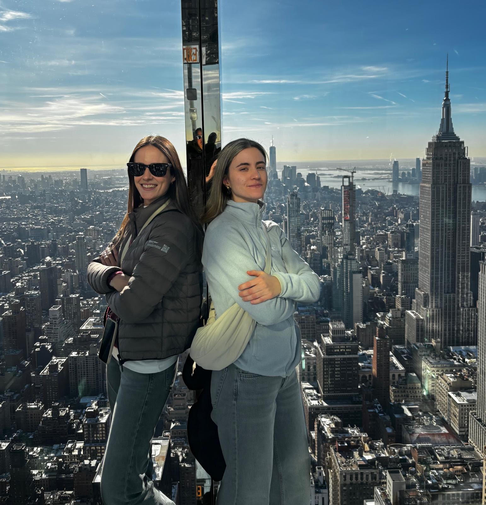

Dos hermanas, muchos viajes y una misma idea dándonos vueltas en la cabeza.

Siempre que podemos, viajamos. Nos gusta mucho y no le hacemos ascos a nada — mejor conocer de más que de menos.
Hemos hecho los típicos viajes culturales, esos en los que vas viendo monumento tras monumento. No están mal. Pero cuando vuelves a casa, sientes que no te has empapado de verdad del país ni de su gente.
Por otro lado, a las dos nos gusta mucho el deporte — siempre lo hemos practicado. Y en algún momento nos dimos cuenta de algo: una de las mejores formas de conocer un país es a través de su deporte. Su historia, sus rituales, la forma en que se practica, lo arraigado que está — todo eso habla del país y de su gente tanto como cualquier monumento.
De ahí nació Bonder: un viaje que combina las dos cosas. El itinerario cultural que ya conoces y días entrenando ese deporte junto a quien lo practica de verdad. Esa mezcla es la que te deja algo que de verdad se queda contigo.
Cada destino, entendido desde dentro.
Sal de la rutina de verdad, no solo de geografía.
Cuerpo y mente, también quieren viajar.
Bonder nace de dos palabras. Bōken (冒険), aventura en japonés.
Y sonder, ese instante en el que entiendes que cada persona que cruzas vive una historia tan intensa como la tuya.
Juntas forman Bonder — que además suena a bond: vínculo, conexión.
Para nosotras, un buen viaje no es el que visitas. Es el que te deja un vínculo con el lugar.